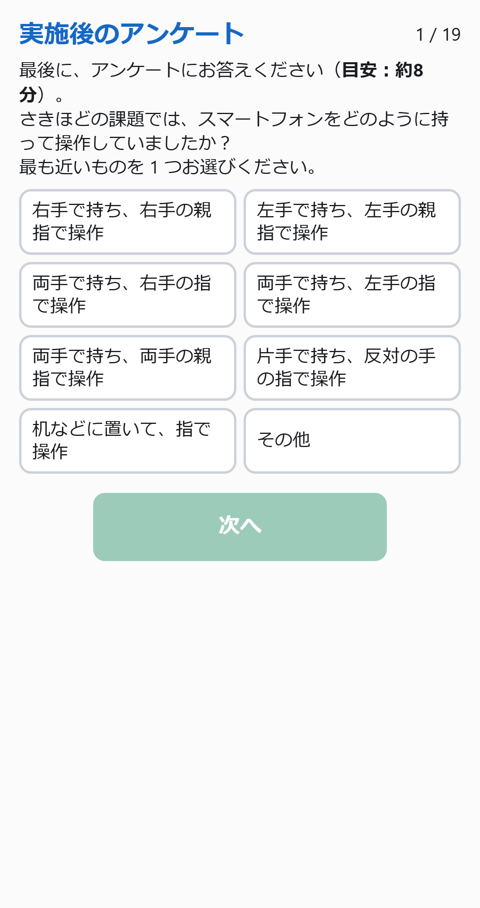
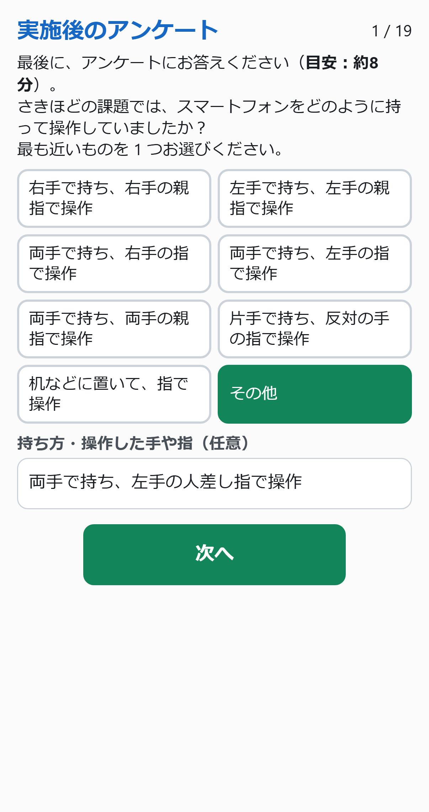
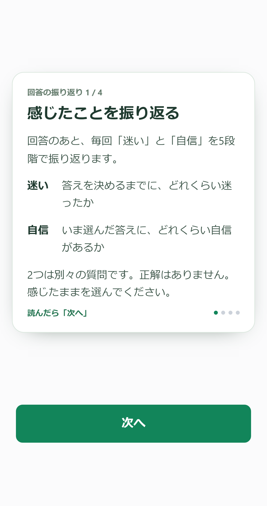

2026-11-01 · UI28
持ち方を2列に、迷いと自信の違いを最初に
アプリ本体から撮影した実画面です。「その他」は任意記入で、空欄でも次へ進めます。説明はこれまでと同じ4枚と練習導入の順序です。
持ち方を操作する（送信なし）説明を操作する（送信なし）実装・検証・公開状態
持ち方・8択
「その他」の任意記入
振り返りの説明・1枚目
14種類の画面サイズで、持ち方の3状態と説明4枚を検証しました。Chromeのタッチエミュレーションによる確認で、Safari実機やキーボード表示中の確認とは区別します。
画面遷移と3サイズ比較これまでの説明との比較